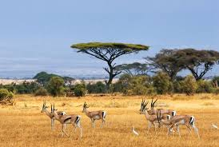
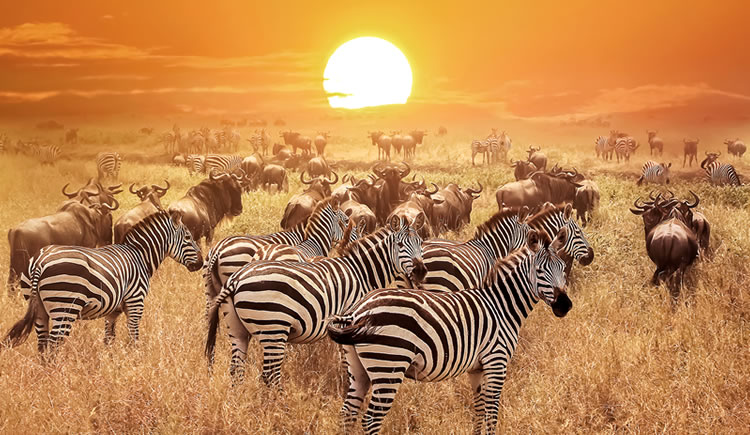
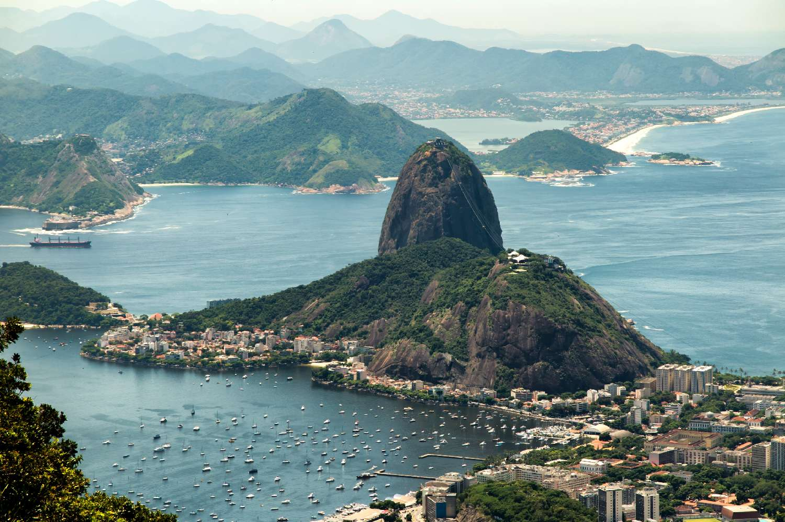

COMPARAÇÃO AMÉRICA DO SUL E AFRICA


A África e a América do Sul são continentes que apresentam tanto semelhanças quanto diferenças em aspectos geográficos, históricos, culturais e econômicos. A África é o segundo maior continente do mundo e possui mais de 50 países. Seu território é marcado por grande diversidade climática e natural, incluindo extensas áreas desérticas, como o Deserto do Saara, além de importantes rios, como o Rio Nilo. Já a América do Sul é o quarto maior continente e conta com 12 países independentes. Destaca-se pela presença da Floresta Amazônica, a maior floresta tropical do mundo, do Rio Amazonas e da Cordilheira dos Andes, a maior cadeia de montanhas do continente americano. Em relação à população e à cultura, ambos os continentes foram fortemente influenciados pela colonização europeia e pelo processo de escravidão. A África possui enorme diversidade étnica e linguística, com milhares de línguas faladas. Na América do Sul, predominam o português e o espanhol, heranças da colonização, e há grande miscigenação entre povos indígenas, europeus e africanos. No aspecto econômico, tanto a África quanto a América do Sul dependem bastante da exportação de recursos naturais, como minérios e produtos agrícolas. No entanto, a América do Sul apresenta, em média, maior nível de industrialização e melhores índices de desenvolvimento humano em comparação com grande parte dos países africanos. Assim, apesar das diferenças geográficas e econômicas, os dois continentes compartilham uma história marcada pela colonização, desigualdade social e desafios no desenvolvimento, mas também por grande riqueza cultural e diversidade natural.
Continente Africano




A África é o terceiro maior continente do mundo, com cerca de 30,3 milhões de quilômetros quadrados e mais de 1,4 bilhão de habitantes. O continente é formado por 54 países e apresenta uma enorme diversidade cultural, linguística, geográfica e histórica. É banhada pelo Oceano Atlântico a oeste, pelo Oceano Índico a leste, pelo Mar Mediterrâneo ao norte e pelo Mar Vermelho a nordeste. A África é considerada o berço da humanidade, pois foi nesse continente que os cientistas encontraram os fósseis humanos mais antigos. Uma das civilizações mais importantes da história foi o Antigo Egito, conhecido por suas pirâmides, faraós e grandes avanços em matemática, medicina e arquitetura. Além do Egito, também existiram importantes reinos e impérios africanos, como o Império do Mali e o Império Songhai. O continente é geralmente dividido em cinco regiões: África do Norte, África Ocidental, África Central, África Oriental e África Austral. Entre os países mais conhecidos estão o Egito, a Nigéria, o Quênia e a África do Sul. A natureza africana é muito rica e variada. O continente abriga o Deserto do Saara, o maior deserto quente do mundo, além do Rio Nilo, um dos rios mais importantes do planeta. Também possui savanas, florestas tropicais e uma grande variedade de animais como leões, elefantes, girafas e rinocerontes. A cultura africana é extremamente diversa. São faladas mais de 2.000 línguas no continente, e as principais religiões são o cristianismo e o islamismo, além das religiões tradicionais africanas. A música, a dança e as tradições orais têm grande importância na vida cultural dos povos africanos. Economicamente, a África é rica em recursos naturais, como ouro, diamantes e petróleo. A agricultura e a mineração são atividades importantes em muitos países. Apesar de enfrentar desafios sociais e econômicos, vários países africanos apresentam crescimento e desenvolvimento nas últimas décadas.
Continente Sul Americano



A América do Sul é um continente localizado majoritariamente no hemisfério sul, com cerca de 17,8 milhões de km² e aproximadamente 430 milhões de habitantes. É formada por 12 países independentes e possui grande diversidade cultural, social e natural. O maior e mais populoso país é o Brasil, que ocupa quase metade do território sul-americano. O continente apresenta paisagens muito variadas. Destacam-se a Cordilheira dos Andes, a maior cadeia de montanhas da região, a Floresta Amazônica, considerada a maior floresta tropical do mundo, e o Rio Amazonas, um dos rios mais extensos e volumosos do planeta. O clima varia entre equatorial, tropical, temperado e até desértico, como no Atacama. Antes da chegada dos europeus, o território era habitado por diversos povos indígenas, como os incas. A colonização foi feita principalmente por espanhóis e portugueses, o que explica o predomínio das línguas espanhol e português na região. A independência da maioria dos países ocorreu no século XIX. A economia sul-americana baseia-se na agricultura, pecuária, mineração e exportação de recursos naturais, como soja, café, petróleo e minérios. Culturalmente, o continente é marcado pela mistura de povos indígenas, europeus e africanos, refletida na música, na culinária e nas tradições. O futebol também é um dos grandes símbolos da identidade sul-americana.